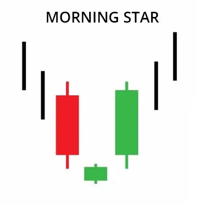
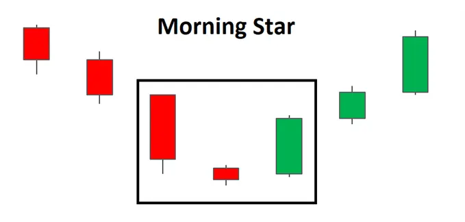
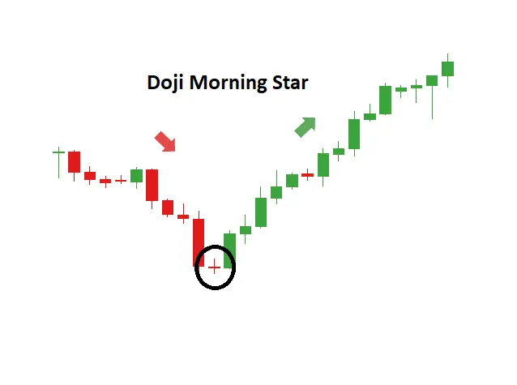
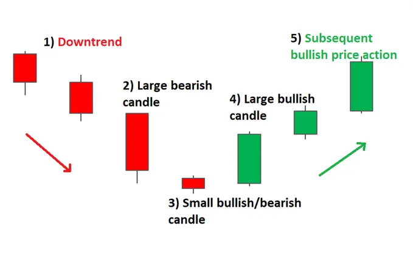
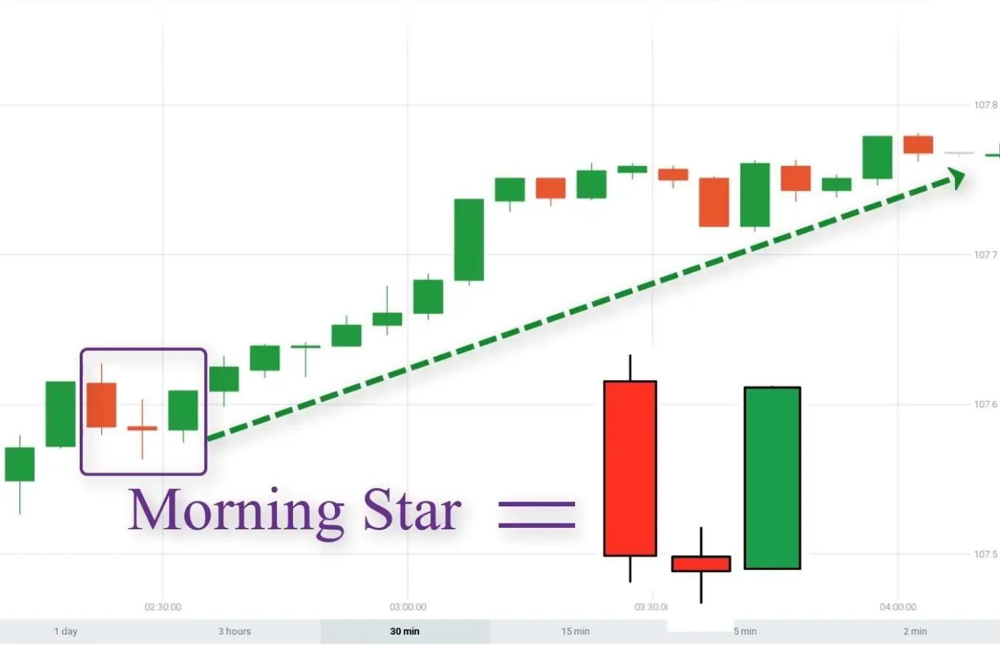

मॉर्निंग स्टार पैटर्न एक तीन-मोमबत्ती वाला बुलिश रिवर्सल कैंडलस्टिक पैटर्न होता है जो एक डाउनट्रेंड के नीचे आता है। इससे पहले एक धीमी गिरावट का संकेत होता है जो एक नए अपट्रेंड के लिए एक बड़ी बुलिश मूव का आधार रखता है।

| Morning Star Doji |
व्यापारियों को बाजार में अनिश्चितता के संकेत के लिए आमतौर पर तल्ख़ दबाव में कमी के लक्षणों की तलाश करनी चाहिए जहां बिकवाली दबाव में कमी के बाद बाजार थोड़ा सा फ्लैट रहता है। यहां दोजी मोमबत्ती की तरह की मोमबत्तियों की तलाश की जा सकती हैं जब बाजार एक ही स्तर पर खुलता है या बहुत करीब से खुलता है। यह अनिश्चयता बल्स द्वारा एक बुलिश मूव के लिए मार्ग खोलती है क्योंकि वे इस स्तर पर मूल्य की कीमत देखते हैं और आगे बिक्री को रोकते हैं। दोजी के बाद बुलिश मोमबत्ती का दिखना इस बुलिश पुष्टि को प्रदान करता है।

| HOW TO IDENTIFY A MORNING STAR ON FOREX CHARTS |
फॉरेक्स चार्ट्स पर मॉर्निंग स्टार की पहचान करने में तीन मुख्य मोमबत्तियों की पहचान से अधिक होती है। जरूरी है कि पूर्व मूल्य क्रिया और मौजूदा रुझान के भीतर पैटर्न के आने की समझ हो।

| HOW TO TRADE THE MORNING STAR PATTERN |
मॉर्निंग स्टार पैटर्न नीचे दिए गए EUR/GBP चार्ट में देखा जा सकता है, जहाँ एक तैरी रेखा है जो उलटी दिशा में जा रही है और फिर उलटी दिशा के पैटर्न के गठन से पहले चलती है।
चार्ट को देखते हुए, पैटर्न पूरा होने के बाद, ट्रेडर अगली कैंडल के ओपन पर एंट्री करने के लिए देख सकते हैं। अधिक सतर्क ट्रेडर हो सकते हैं और देख सकते हैं कि क्या मूल्य क्रिया ऊपर जाती है। हालांकि, इसका नुकसान यह है कि ट्रेडर बहुत खराब स्तर पर भी एंट्री कर सकते हैं, खासकर तेजी से चलते बाजारों में।
लक्ष्य पूर्व रोक या पूर्व समेकन क्षेत्र में रखे जा सकते हैं। स्टॉप्स को हाल के स्विंग लो के नीचे रखा जा सकता है, क्योंकि इस स्तर के तोड़ने से उल्टी दिशा का उल्लंघन होगा। फॉरेक्स मार्केट में कोई गारंटी नहीं होती है, इसलिए ट्रेडर हमेशा एक सकारात्मक जोखिम-बेलगाम अनुपात बनाए रखने के साथ साउंड रिस्क मैनेजमेंट अपनाना चाहिए।
फॉरेक्स मार्केट में मॉर्निंग स्टार को ट्रेड करते समय, शेयर मार्केट की तरह कीमत बहुत कम गैप नहीं करती हैं और इसलिए तीन-मोमबत्ती आकृति आमतौर पर पिछले संवर्ग बंद के बहुत करीब खुलती है।
